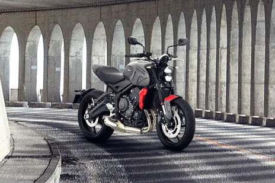

Triumph Trident 660

The Triumph Trident 660 is a naked motorcycle by manufacturer Triumph Motorcycles Ltd. Following a four year development programme, the Triumph Trident prototype was revealed at the London Design Museum on 25 August 2020. To disguise the final form, the prototype was painted all white with the exception of the engine.A further, less-disguised and fully running prototype was released to the press a few weeks later, and shows the motorcycle undergoing final testing.
Features
The motorcycle features:
- modes (rain/road)
- Switchable traction control
- Non-switchable anti-lock brakes
- Hybrid LCD/TFT instrument pod
- Full LED lighting
- Optional quickshifter and autoblipper
- A2 Licence restrictor kit
- LAMS Restricted (39 kW) model for Australia / New Zealand market
An optional Bluetooth connectivity system is available, which allows mobile phone connection, navigation, music control, and GoPro control. This system is driven by the My Triumph app, and available for both Android and Apple iOS.
Key Highlights
| Engine Capacity |
660cc |
| Mileage |
15kmpl |
| Transmission |
6 Speed Manual |
| Kerb Weight |
189 kg |
| Fuel Tank Capacity |
14 litres |
| Seat Height |
805mm |
For more information